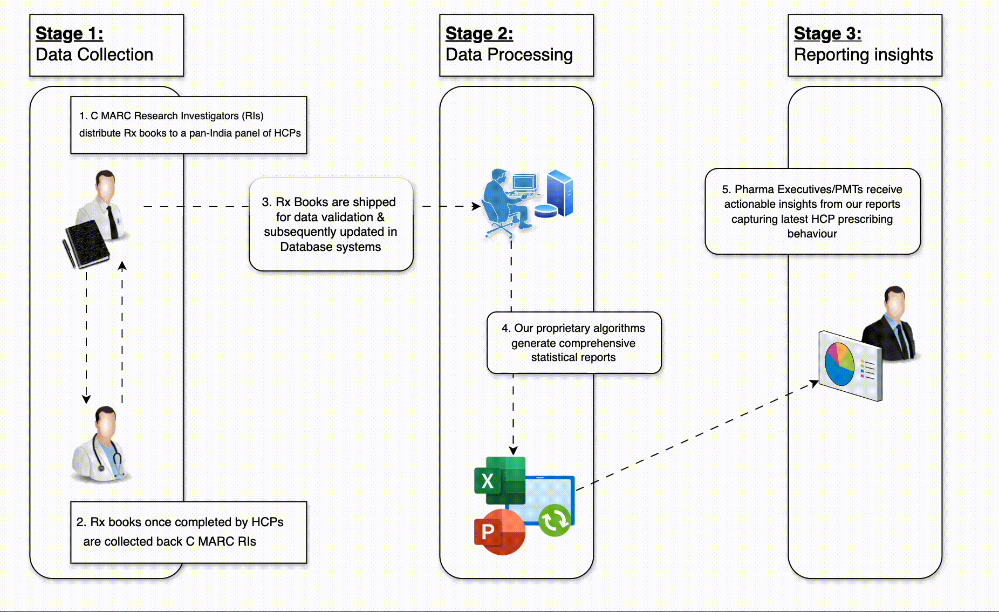

We are a research-based healthcare
consultancy organisation
Since 1977, we continue to provide strategic solutions on key strategic marketing issues and advising corporates on sales-force strategies, portfolio development and optimization through existing products & new launches to increase prescriber coverage and improve prescriber productivity - through our flagship service - Continuous Prescription Research - CPR™
Steps involved in our flagship CPR™ service
1
Data Collection
2
Data Processing
3
Reporting Insights
How our CPR™ service works
Our CPR™ panel
20+
Specialties
panel network
5 Mn+
Prescriptions
processed annualy
100+
cities & towns
panel coverage
What our service users say about us!
Satish Reddy
MD - Dr. Reddy's ('98)
"Our strategy in emerging as a leading pharmaceutical company through ethical promotion of innovative products has been ably supported by the valuable inputs from C MARC...."
Pankaj Patel
Chairman - Zydus('99)
"I am greatly impressed by the services offered by C MARC. As package buyers, we find CPR a unique database. The research concept of which is totally different from other management/reasearch models. The strategic recommendations of CPR has immensely helped us in formulating our marketing plan."
Habil F Khorakiwala
Chairman, Wockhardt ('99)
"Wockhardt has been utilizing the services of C MARC for more than 10 years. C MARC was the first to start the Continuous Prescription Audit. What has impressed me the most is that C MARC is not only providing data information, but also is helping the organization critically evaulating, analysing and commenting on the information and the brand."
Shailesh Ayyangar
MD - India, Sanofi('12)
"Some of the present day iconic brands of pharma industry owe their current positioning and success to Prof. Mitra through his famous C MARC organisation. "